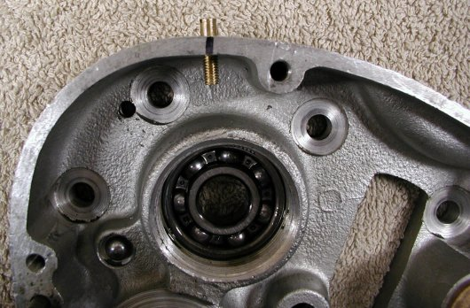
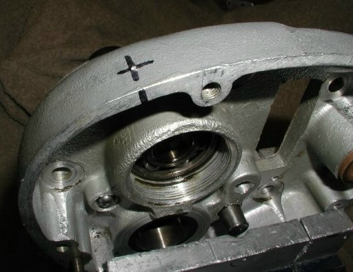
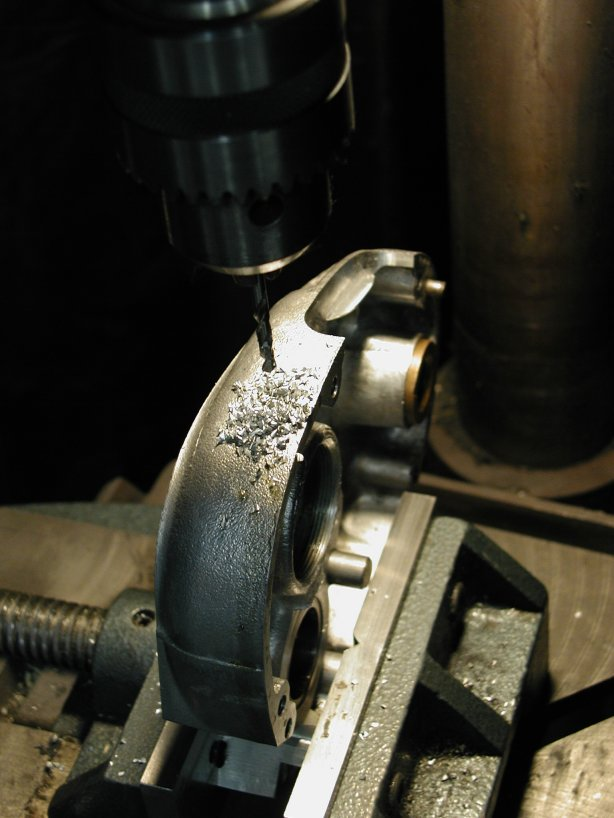
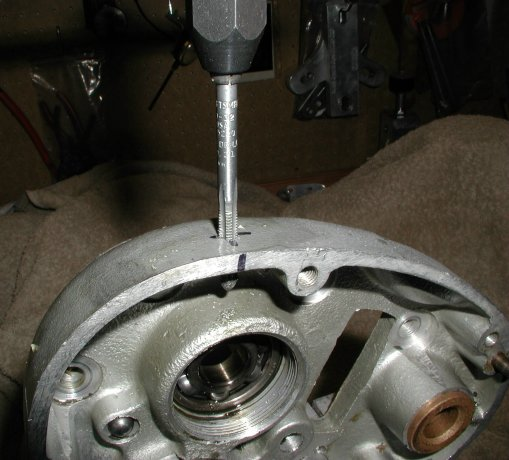
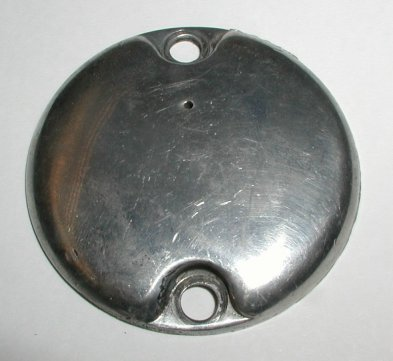

by Fred Eaton
Summary:
The Commando gearbox will build up pressure due to heating, and this can cause oil to leak out
the seals and through the main shaft bore. This problem was fixed on the MK3, but can be fixed on earlier gearboxes.
Procedure:
The best way to fix the pressure build-up is to install the MK3 breather vent (06-5199).
This can easily be done with a #21 drill and a 10 x 32 tap.
Drill a #21 hole, in the position shown in the next picture, .8" from the stud hole and 3/8" in from the edge.
Tap this hole with a 10 x 32 tap and thread in the breather vent.



Note: the angle of the hole is towards the center of the bearing.

Another option used by some riders is to drill a small hole in the inspection cover. This hole should be very small like a #58 drill (.042"). Replace the inspection cover with the hole towards the top of the gearbox. This is an easy and cheap fix and safe, for if the cover starts to leak out this hole, a dab of silicone sealer will plug up the hole.

Install breather vent in customers gearbox, part number 06-5199/CU, $48.25.
Prices current as of 02/12/21.
Return to Technical Articles
Return to Build Your Own Commando
This page was written and designed by F. H. Eaton & Associates if you have any questions or comments please contact us at info@fheaton.com